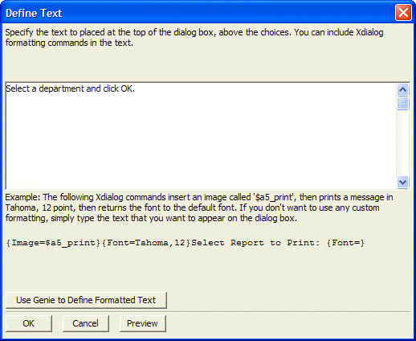

Define Text Dialog Box
Enter text in the text box, optionally with Xdialog formatting.
If you are not familiar with Xdialog formatting commands, click the Use Genie to Define Formatted Text button to display the Static Text Genie.
Click Preview to see what the text will look like.
Click OK to continue.

See Also
Quick Dialog, Static Text Genie
Supported By
Alpha Five Version 6 and Above